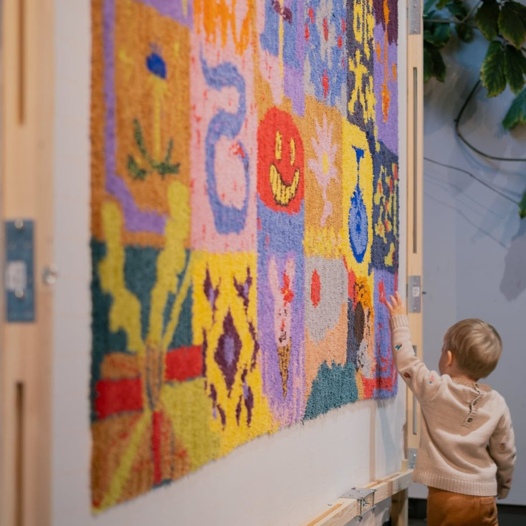
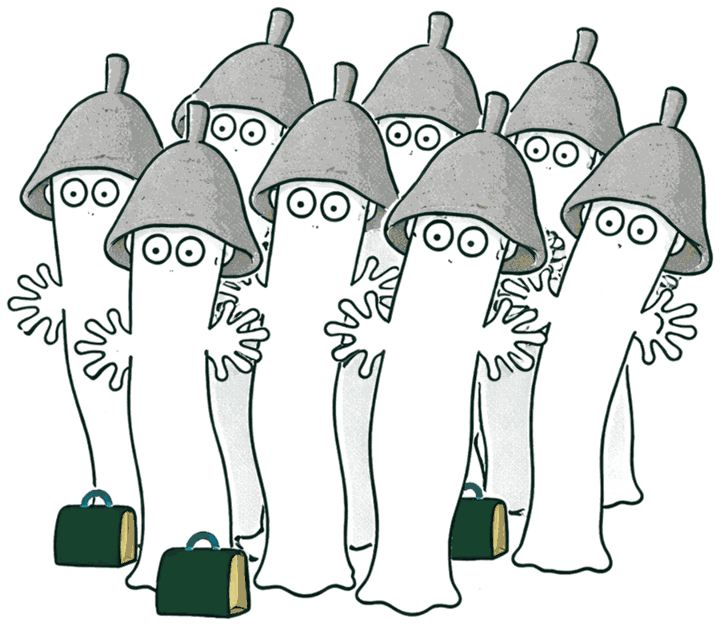

TuftningTufting
Små tuftade textilier, gjorda för hand i liten grupp.
Small tufted textiles, made by hand in a small group.
- Tid
- 4 timmar, 12–16
- Platser
- 6 per dag
- Pris
- Ingår
- Ram, väv, garn, handtuftare, lim och fika
- Ta med
- Ett motiv, skiss eller bild. Vet du redan vad textilen ska sitta på, ta gärna med det
- Time
- 4 hours, 12–16
- Seats
- 6 per day
- Price
- Included
- Frame, cloth, yarn, hand tufter, glue and fika
- Bring
- A motif, sketch or picture. If you already know what the piece will go on, bring that too

Vi tuftar för hand, utan elektriska maskiner. Vad det blir bestämmer du: en lapp på jackan, en sittdyna, en liten matta eller något för väggen. Inga förkunskaper. Från 18 år.
- 12–13
- Vi hälsar på varandra, sätter upp ramarna, skissar motiv, väljer garn och tittar på verktyg och tekniker.
- 13–16
- Vi tuftar. Mot slutet limmar vi baksidorna. De torkar över natten och hämtas i verkstaden dagen efter.
Mer information kommer några dagar före kursen. Vi håller kursen på svenska eller engelska.
Kursledare: Jonas Johansson, konstnär och designer.
We tuft by hand, no electric machines. What it becomes is up to you: a piece for a jacket, a seat pad, a small rug or something for the wall. No experience needed. Ages 18 and up.
- 12–13
- We say hello, set up the frames, sketch motifs, choose yarn and look at tools and techniques.
- 13–16
- We tuft. Towards the end we glue the backs. They dry overnight and you collect them at the workshop the next day.
More information a few days before the course. We run it in Swedish or English.
Course leader: Jonas Johansson, artist and designer.
Klättermusens Verkstad
Nytorgsgatan 36, Södermalm
Boka via knappen, bekräftelse på e-post. Full återbetalning fram till sju dagar före, därefter kan platsen överlåtas. Fullbokat? Mejla för väntelista.
Frågor och fakturor: j@jonasjohansson.se
Klättermusens Verkstad
Nytorgsgatan 36, Södermalm, Stockholm
Book with the button, confirmation by email. Full refund up to seven days before, after that you can pass on your seat. Fully booked? Email us for the waiting list.
Questions and invoices: j@jonasjohansson.se
BastumössaSauna hat
Tova din egen bastumössa i ull.
Felt your own sauna hat in wool.
- Tid
- 6 timmar, 12–18
- Platser
- 6 per dag
- Pris
- Ingår
- Ull, verktyg, allt material och fika
- Ta med
- En färgidé och kläder som tål vatten och tvål
- Time
- 6 hours, 12–18
- Seats
- 6 per day
- Price
- Included
- Wool, tools, all materials and fika
- Bring
- A colour idea and clothes that can take water and soap

Rose leder dig steg för steg: lägga ut ullen, blöta, tvåla, rulla, tova och forma, tills du har en mössa formad efter ditt eget huvud. Ull, varmt vatten och tvål, inga vassa verktyg. Mössan följer med hem samma dag. Inga förkunskaper. Från 18 år.
Mer information kommer några dagar före kursen. Vi håller kursen på svenska eller engelska.
Kursledare: Rose Hallgren, arkitekt och ullexpert, Fluffy Encounters.
Rose guides you step by step: laying out the wool, wetting, soaping, rolling, felting and shaping, until you have a hat shaped to your own head. Wool, warm water and soap, no sharp tools. The hat goes home with you the same day. No experience needed. Ages 18 and up.
More information a few days before the course. We run it in Swedish or English.
Course leader: Rose Hallgren, architect and wool expert, Fluffy Encounters.
Klättermusens Verkstad
Nytorgsgatan 36, Södermalm
Boka via knappen, bekräftelse på e-post. Full återbetalning fram till sju dagar före, därefter kan platsen överlåtas. Fullbokat? Mejla för väntelista.
Frågor och fakturor: j@jonasjohansson.se
Klättermusens Verkstad
Nytorgsgatan 36, Södermalm, Stockholm
Book with the button, confirmation by email. Full refund up to seven days before, after that you can pass on your seat. Fully booked? Email us for the waiting list.
Questions and invoices: j@jonasjohansson.se